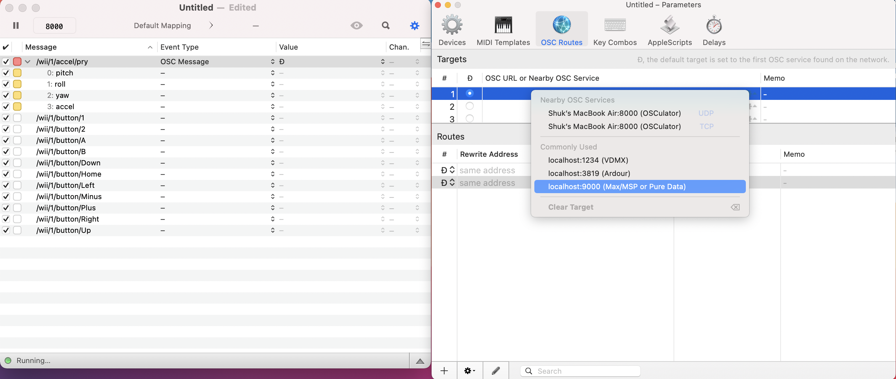

A site for using MAX/MSP for making music with Wiimotes!
Hello!
This site is intended to showcase one of the many possibilities you can do with MAX, working with Wiimotes! For anyone interested in using different interfaces with MAX, using Wiimote controllers is a great start since they're easily accessible. You might even have a pair at home!
From my own experience with working with Wiimotes, I've found several resources online, yet most were quite dated. This page is intended to incapsulate the most recent and relevant information regarding connecting the Wiimotes to MAX in one single page. I'll be going in-depth from setting up your Wiimotes, generating sounds with it, and showcasing example works that can be used as inspiring for your own projects.
What is MAX?
MAX/MSP/Jitter or more commonly just known as MAX is a visual programming language created by cycling74. Many musicians use MAX to create and manipulate audio, video, and graphics in real-time, which can become suitable for interactive multimedia projects for performances. MAX is not free. You get a 30-day trial period and afterwards you'll have to pay $9.99 USD/month. Click here to go to the MAX website!
So how does MAX work?
The main idea when using MAX is connecting objects to one another. Objects communicate with each other through patch cords. The more objects your MAX patch (What MAX calls the programs you create with it) has, the more complicated it becomes.
Now there are several objects in MAX that you can interact with. But for now, I will only be discussing the objects that will be used for implementing the Wiimotes to MAX. If you wish to learn more about the objects available on MAX,check out the MAX documentation site!
Adding Wiimotes
As I said before, MAX is a great tool for interactive multimedia projects. But when performing live, watching you hunched over behind a laptop using MAX is not very exiting from an audience's point of view. This is where the Wiimotes come in. Wiimotes can add another layer of interactivity between user and MAX, such as measuring the movements and button presses performed on the controllers. They let you leave behind the keyboard and allows the user to become part of the performance itself.
OSC Protocol
The first step towards connecting the Wiimotes to MAX is figuring out how to collect data from the Wiimotes. You will need to use a program that support the OSC (Open Sound Control) protocol. OSC is a protocol for digital music/multimedia devices developed at UC Berkeley at their Center for New Music and Audio Technology (CNMAT). Basically, it's designed for real-time control of sound/media.
1. Downloading Osculator
Now, there are several programs out there that can connect your Wiimotes to your computer. But one of the most used for connecting Wiimotes in the MAX community is Osculator.
Click here to go to the download page.
Although many people still use Osculator, it is quite an old program, but it still works fine. Its forum is somewhat active still and I found it helpful looking at it when I was debugging my own issues with using Osculator.
2. Setting Up Osculator
After download Osculator, make sure bluetooth is turned on or else your Wiimotes will not be detectable for Osculator. Due to a bug in Apple's IOBluetooth layer, this is why newer versions of macOS will not work.
Now open up Osculator. You should be viewing table with text saying "Empty Message List".
Click on the top right icon to open the parameters window.
Click on Pair a Wiimote.
On your Wiimote, press on both the A and B buttons. You should be able to see the Address table be populated with a new entry. If not, then press on the sync button on the back of your Wiimote, where the batteries are kept, and retry.
Osculator allows up to 8 Wiimotes to be connected. So if you have more Wiimotes, just repeat this step.
Now that your Wiimote is connected, try pressing the buttons/swinging it around. You should notice data being populated in the main table.
After you are finished configuring your messages into Osculator, make sure to save it. This skips setting up every Wiimotes for the future. You'll only to turn on your Wiimotes and it should lighten up the messages again.
There are a few downsides of using Osculator:
Osculator is not free. Unless you pay $23.99 USD, a popup appears every 20 minutes asking you to pay.
You need to be running on macOS 11.0 Big Sur or older for Osculator to work.
Varying bootleg Wiimotes have reported to work/not work. Meaning if you don't own an authentic Wiimote, Osculator might not work with you.
Wii Nunchucks
You might be asking,"What about the Wii Nunchucks?". Unfortunately, I haven't tested Osculator with Nunchucks yet HOWEVER,it is possible!
3. Wii to MAX
After successfully connecting your Wiimotes to Osculator, you want to make sure Osculator will be able to send OSC messages to MAX. For each message you have, the Event Type is OSC Message and Value to localhost:9000 (MAX/MSP or Pure Data).

Now switching over to MAX, you're going to want to create objects to receive the OSC messages. The first object is called udpreceive. you'll want to set the port number with it, in this case: 9000.
Next, connect it to the route object. For route, you will need to enter the message you want from the Osculator table. In this example, I chose /wii/1/accel/pry.
Now, since I chose to work with the /wii/1/accel/pry message, I will be receiving 3 sets of numbers: pitch, roll, and yaw. You will need to use the unpack object using floats (f). Most of the other messages will only send one set of numbers, since they are button presses.
Connecting the float object to number objects with floats will show the numbers.
For each message you chose to use, each one must have a route and unpack object. Having all the messages configured, your MAX patch will end up looking like this:
Wiimotes in Action
This is a video of me performing my final project for MUS407. It uses the Wiimmotes to control mainly amplitude and frequencies. Buttons were used to change between filters and effects. Unfortunately, I did not keep the MAX patches for it.
A very old video of a group of people using the Wiimotes and Nunchucks together. Very intersting and cool!
Someone showcasing his MAX patch with Wiimotes. MAX patch is linked in the comment section of this video. You should be able to play with the MAX patch as long as you are able to run Osculator.
References and Useful Resources
This video showcases how to setup Osculator along with a quick tutorial on creating a simple MAX patch for drums using the Wiimotes. The video shows an older version of Osculator.
Wiimote mapping done by Jon Bellona. This MAX patch has all the done all the work on MAX for you so you only need to connect with the Osculator.